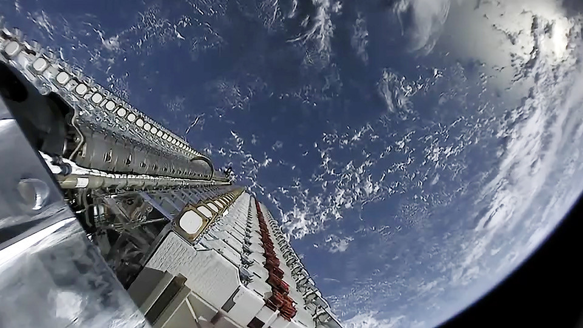

Il registro è successivo all’ultima revisione editoriale. Le serie sono state ricalcolate; l’interpretazione richiede un nuovo controllo.
La tesi
Una costellazione non è un oggetto da lanciare una volta. È un servizio sostenuto da produzione, sostituzioni, operazioni e fine vita. Il beneficio per chi ottiene una connessione e il costo per chi condivide cielo, spettro e orbite devono essere valutati con strumenti diversi, senza cancellarsi a vicenda.
Una rete in orbita ha bisogno di un flusso continuo
Il numero dei satelliti è la misura più facile da comunicare e una delle più facili da fraintendere. Può indicare esemplari autorizzati, costruiti, consegnati, lanciati, ancora in orbita, funzionanti o inseriti nel servizio. Questi insiemi non coincidono. Una foto di satelliti pronti al dispiegamento non documenta la disponibilità della rete; un'autorizzazione non documenta la flotta.

.jpg){kind=link}
La distinzione fra stock e flusso aggiunge un'altra domanda. Anche se il numero dei satelliti operativi restasse costante, l'operatore dovrebbe sostituire quelli arrivati a fine vita. A questa attività si potrebbero aggiungere crescita della rete, perdite anticipate e revisioni dell'hardware. La produzione e i lanci non dipendono quindi soltanto dal numero che compare nella descrizione finale della costellazione.

Il modello usa due soli parametri: N satelliti mantenuti in servizio e una vita media L, in anni. In un sistema stazionario, con distribuzione delle età stabilizzata e sostituzioni regolari, il flusso medio necessario è N/L satelliti all'anno. Le dimensioni e le durate nel grafico sono scenari didattici. Non sono una previsione Starlink, una flotta OneWeb o il numero di satelliti che hanno effettivamente fatto rientro in un anno.
Accorciare L a parità di N fa aumentare il numero delle sostituzioni; non determina da solo il rischio ambientale complessivo. La durata operativa e la permanenza dopo la fine della missione sono inoltre due intervalli diversi. Il parametro di cinque anni nel modello è una scelta dello scenario, non l'applicazione di una norma sul tempo di smaltimento. Confonderli produrrebbe una conclusione sbagliata anche con una divisione perfettamente eseguita.
Il modello è un bilancio medio. Una costellazione dispiegata in grandi gruppi può avere età concentrate e picchi di rinnovo. Durante la crescita, il flusso include anche l'espansione; un guasto anticipato può richiedere sostituzioni supplementari. Se si vuole passare dal modello a una previsione di missioni, occorrono altri dati: capacità effettiva del lanciatore, compatibilità dei satelliti, strategia dei gusci orbitali e tempi di entrata in servizio. Il dossier non converte automaticamente ogni satellite da sostituire in una frazione di lancio Falcon o Starship.
Che cosa si compra con quel sistema
Il valore della rete non è il conteggio degli oggetti. È il servizio per l'utente: disponibilità, velocità, ritardo, continuità, possibilità di installare il terminale e prezzo sostenibile. Una connessione può essere importante proprio dove l'infrastruttura terrestre manca, è fragile o richiede tempi lunghi. Navi, aree isolate e collegamenti di emergenza hanno esigenze diverse da un'abitazione già raggiunta da una buona rete cablata.
Questa utilità non dipende dall'accettare ogni dichiarazione dell'operatore. La NSF, nel documento sull'accordo con SpaceX, riconosce il bisogno di connettività nelle comunità meno servite mentre descrive le misure per proteggere l'astronomia. È un esempio concreto di due interessi pubblici presenti nello stesso confronto. Non è la prova che il servizio sia ugualmente necessario ovunque o che le mitigazioni risolvano ogni impatto.
Per confrontare Starlink e OneWeb bisogna prima definire la domanda. Un utente residenziale e un cliente che acquista un servizio gestito tramite un partner non stanno necessariamente comprando lo stesso prodotto. Contare i satelliti e dividere per il numero degli abbonati, senza armonizzare servizi, quote, terminali e mercati, non misura l'efficienza delle due architetture. La monografia sul confronto OneWeb offre il contesto; qui la scelta è non produrre una classifica con numeri incompatibili.
Il cielo è condiviso, ma gli impatti non sono tutti uguali
L'effetto sulle osservazioni ottiche non va descritto come una semplice opinione di chi non ama i satelliti. Mróz e colleghi hanno analizzato immagini ZTF raccolte fra novembre 2019 e settembre 2021. Nel campione crepuscolare la frazione con tracce aumentò da meno dello 0,5% a circa il 18% nell'agosto 2021. La data, lo strumento e il tipo di osservazione sono parti indispensabili del risultato.
Non è il 18% di tutta l'astronomia mondiale, né una misura del cielo del 2026. Gli autori descrivevano anche una situazione in cui l'attività scientifica corrente di ZTF non era ancora fortemente compromessa. Queste due informazioni possono convivere: un disturbo misurato e un bilancio operativo circoscritto. Le tracce non vanno negate; la percentuale non va estratta dal campione e applicata a qualsiasi telescopio.
Le mitigazioni devono essere giudicate con lo stesso metodo. Ridurre la luminosità di un satellite può migliorare un certo tipo di osservazione, senza risolvere radiointerferenze, attraversamenti di campo o ogni geometria di illuminazione. L'accordo NSF descrive impegni e coordinamento; per valutarne l'efficacia servono misure su configurazioni, strumenti e periodi definiti. Un disegno modificato non è automaticamente un danno eliminato.
Restare meno a lungo può aiutare l'orbita e aumentare il rinnovo
Il rapporto ambientale ESA 2026, pubblicato il 14 settembre e basato sui dati fino a fine 2025, considera il traffico globale, non soltanto Starlink. Descrive crescita del traffico, rischi dei detriti e necessità di coordinamento e rimozione. I suoi scenari futuri non sono un conteggio di collisioni già avvenute né una previsione esclusiva per un operatore.
Il rientro a fine vita riduce la permanenza dell'oggetto in orbita, ma sposta parte del problema verso l'atmosfera e, per i frammenti che sopravvivono, il suolo. Materiali, massa, quota, capacità di manovra e smaltimento cambiano il bilancio. Un satellite attivo che può evitare una congiunzione non ha lo stesso profilo di un frammento non manovrabile. Non sarebbe serio assegnare loro lo stesso rischio sulla sola base del numero.
La ricerca di Ferreira e colleghi del 2024 usa simulazioni per studiare l'ossidazione dell'alluminio durante il rientro e il potenziale effetto degli ossidi sull'ozono. È un motivo per misurare meglio i prodotti dei rientri e il loro comportamento, non una misura diretta di un danno globale già attribuito a Starlink. Composizione, distribuzione e processi atmosferici contano: il nostro modello N/L non li contiene e non deve essere usato per sostituirli.
Si vede così un compromesso reale. Una vita più breve può facilitare il rinnovo e l'eliminazione degli esemplari; a parità di stock può richiedere un flusso maggiore di produzione e sostituzione. Il suo segno finale non si ricava dalla divisione. Per valutarlo servono analisi distinte di rischio orbitale, filiera industriale, emissioni dei lanci, rientri e servizio fornito. Sommare tutto in un numero non confrontabile non darebbe un bilancio: nasconderebbe le differenze.
Un bilancio che non si risolve con due slogan
La domanda «sono utili o dannose?» è troppo larga per essere una buona istruzione di ricerca. Conviene chiedere: utili a chi, rispetto a quale alternativa, a quali condizioni e con quali effetti su altri? I benefici non cancellano un problema misurato; un problema misurato non annulla automaticamente ogni beneficio. Ma questo non significa dare lo stesso peso a un annuncio promozionale e a una misura indipendente. Il peso dipende dalla prova, non dalla simmetria della frase.
Per un seguito del dossier occorrono serie che distinguano satelliti autorizzati, lanciati, operativi e ritirati; età e cause di fine vita; manovre e rischi di collisione definiti con la stessa soglia; osservazioni ottiche e radio ripetute su campioni comparabili. Per il servizio occorrono prestazioni e disponibilità in mercati definiti, non soltanto la migliore velocità mostrata in una prova. Per la parte economica andrebbero dichiarati investimenti, costi di rinnovo e alternative di connettività, senza attribuire dati riservati all'azienda.
La rete in orbita è dunque una capacità e un impegno continuativo. Il modello qui pubblicato non decide se una specifica costellazione sia sostenibile. Rende visibile una parte spesso trascurata della domanda: anche una flotta che smette di crescere deve essere sostenuta nel tempo. È il ponte fra il dossier sulla cadenza Falcon e il libro sulle reti satellitari.
Fonti, date e ruolo dei documenti
- ESA Space Environment Report 2026. Agenzia indipendente dall'operatore. Documento: 2026-09-14; controllo: 2026-10-12. Overview, Changing behaviour e Projections into the future. Edizione 2026, dati fino a fine 2025; contesto globale. Proiezioni condizionali, non misura esclusiva dell'impatto di Starlink.
- Mróz e altri, Impact of the SpaceX Starlink Satellites on the ZTF Survey Observations. Ricerca originale. Documento: 2022-01-14; controllo: 2026-10-12. Abstract e campione novembre 2019–settembre 2021. Immagini crepuscolari ZTF: meno dello 0,5% nel 2019, 18% nell'agosto 2021. Non una percentuale di tutta l'astronomia o del cielo nel 2026.
- NSF, accordo di coordinamento astronomico con SpaceX. Istituzione scientifica pubblica. Documento: 2023-01-10; controllo: 2026-10-12. Provisions of the 2022 coordination agreement. Descrive misure concordate per proteggere osservazioni ottiche e radio; un impegno non equivale alla verifica universale di efficacia.
- Ferreira e altri, Potential Ozone Depletion From Satellite Demise During Atmospheric Reentry. Ricerca di modellazione. Documento: 2024; controllo: 2026-10-12. Geophysical Research Letters, DOI 10.1029/2024GL109280. Studia i prodotti dei rientri e il potenziale atmosferico. Non viene usato per attribuire un danno globale già misurato a una singola costellazione.
- Starlink, Progress Report 2025. Operatore. Documento: 2025; controllo: 2026-10-12. Rapporto annuale, non contatore corrente. Documento aziendale per confrontare interpretazioni e contesto del servizio; le serie numeriche di questo dossier provengono dal registro, non da un incrocio di totali pubblicitari.
I calcoli del registro sono un'elaborazione originale del sito; le interpretazioni sono editoriali. I modelli didattici non sono dati osservati.
Rifare i calcoli
Risultati, formule e identificatori JSON · Copia esatta del registro usato · Codice del generatore · Codice dei modelli.
Impronta SHA-256 della copia del registro: 4d0fa657bd254af140d593fb1f1b028fed13c5baa55571b934408e776d4b668c. Istruzioni e limiti.